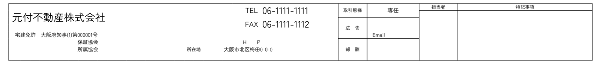
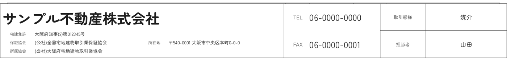

その他の作り方

レインズ様式の図面も作れます。
他社のチラシを読み取って入力欄に入れ、直してから作る方法と、一から入力して作る方法があります。A4横1枚の PDF と、手直しできる Excel で出せます。出来上がりの下で、同じように紹介文も作れます。
見本の物件・会社名はすべて架空です。
マイソクをアップロードするだけで、図面の物件情報と、物件のまわりの施設（駅・買い物・学校・病院・公園など）を入れた紹介文を作ります。メール・LINE にそのまま貼れる形です。同じ図面で、会社欄を自社に差し替える「帯替え」もできます。
見本の物件・施設・会社はすべて架空です。住所と施設の名前・徒歩分数は、実際には物件の住所から調べた結果が入ります。
物件の紹介文づくりは、図面の数字の書き写しと、まわりの施設の下調べがほとんどです。
文章は AI を使わない定型文で組み立てます。図面と調べた施設に無いことは書きません。
PDF か画像（スマホで撮った写真も可）。物件の種別・価格・面積・最寄駅・住所を読み取ります。
読み取った住所を確かめて「この住所で紹介文を作る」を押すと、まわりの施設を調べて紹介文にします。
要らない文はチェックで外せます。文面はその場で直して、コピーしてメール・LINE へ。
送る相手を選ぶと、周辺のおすすめに書く観点が変わります。賃貸の図面は、入居を検討している方向けに作ります。
毎日の暮らしの便利さを、施設の名前と徒歩分数で伝えます。
駅と路線、入居者の暮らしやすさ、まわりの世帯の様子（国勢調査など）を伝えます。
会社欄は自動で見つけて赤で囲みます。ずれていれば、画像の上をなぞって直せます（スマホは指で）。自社情報は、レインズ様式の帯と同じ組み方で描き直します。出来上がりは PDF・画像でダウンロードできます。

帯替えのあと（自社の会社欄）
見本の会社はすべて架空です。
他社のチラシを読み取って入力欄に入れ、直してから作る方法と、一から入力して作る方法があります。A4横1枚の PDF と、手直しできる Excel で出せます。出来上がりの下で、同じように紹介文も作れます。
見本の物件・会社名はすべて架空です。
お客様に送る前の最終確認は、必ず担当者の目でお願いします。